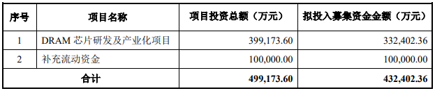

Market Trends
1.Memory Markets Poised for Major Changes as Covid-19 Weighs on Demand(EET India 2020-07-24）
Prior to COVID-19 outbreak, 2020 was shaping up to be a strong recovery year for the DRAM and NAND markets, with both expected to emerge from downturns that had persisted through much of the past two years. Although the situation surrounding the pandemic remains extremely fluid, it will certainly be a headwind to any recovery.
…………
In addition, in its DRAM Quarterly Market Monitor – Q2 2020, Yole affirms, in the DRAM business, market equilibrium was sought via significant capital expenditure cuts in 2019. Between 25% and 30%, according to Mike Howard, VP of DRAM and Memory Research, part of the Semiconductor, Memory & Computing division at Yole. “And as late as Q3-19, plans existed at suppliers to reduce capital expenditure by as much again in 2020. Both Micron and Samsung are expected to introduce products based on 1z technology by 2020; SK hynix will follow. The most advanced DRAM node by 2025 is expected to be 1 beta”, he adds.
…………
2. 库存回补停滞 DRAM价逐季跌(工商时报 2020/07/06 )
新冠肺炎疫情带动在家远距工作商机，美中贸易战导致中国供应链去美化，两大市场变数在上半年带动DRAM库存回补需求并推升价格上涨。不过，随着存货水位明显回升，6月标准型及伺服器等DRAM合约价与5月持平，但利基型DRAM合约价已反转下跌1～5％。由于第三季市场需求减弱，业界预期下半年DRAM合约价逐季走跌。
…………
根据集邦科技及模组厂消息，6月标准型DRAM合约价与5月持平，8GB DDR4模组报价维持在28.5美元，第二季累计涨幅逾11％，主要是受惠于笔电及平板等需求转强。不过，6月利基型DRAM合约价则较5月下跌1～5％，其中x16规格4Gb DDR4颗粒均价跌至1.82美元，x16规格8Gb DDR4颗粒均价亦滑落至3.66美元，第二季底合约价反而低于第一季。
3.存储器发展趋势解读 业界：DRAM优于NAND(台湾经济日报 2020-07-08)
针对DRAM和储存型快闪存储器（NAND Flash）这两大存储器后市，业界普遍有“DRAM优于NAND Flash”的共识。
业者分析，目前看来，DRAM需求拉抬步调较快，价格后市相对看好；NAND Flash则因市场供给较多，预估第3季需求持平第2季，因此价格走势预料也会比DRAM弱。
业者指出，今年第2季NAND Flash市场稳定，价格小幅上扬，不过，从市场近一、两个月的反映来看，支撑第2季NAND Flash市况的笔电及资料中心等重要需求来源，第3季恐面临库存调节压力，因此从需求端来看，第3季力道并不强劲。
市场研究机构集邦咨询（TrendForce）预估，第3季NAND Flash市场将转为供需平衡，主要产品价格将出现持平或微幅下跌。业者预期，在各家供应商供货节制下，今年第3、4季NAND Flash需求不强，预料价格可能小幅修正，以下半年来看，DRAM价格走势将优于NAND Flash。
…………
Vendor News
1.Micron Technology Enablement Program Launched(storagereview 2020-07-16)
Micron launched what they’re calling a Technology Enablement Program (TEP) for their still in development DDR5 DRAM sticks. We covered the expected specs of DDR5 when Micron announced that they’d begun sampling their new product in January. Micron has remained a major producer of semiconductor products, including DRAM (dynamic random-access memory) and flash drives.
Micron is trying to bring together a broad array of companies interested in the development and applications of DDR5 DRAM through their Technology Enablement Program (TEP). If successful, this will allow them to hit the ground running as soon as they begin mass production and shorten the time to market for this newest generation of random-access memory (RAM). Companies that enroll in the program will gain access to several advantages. The most important and exciting is early access to DDR5 component and module samples as they become available. TEP members will also have access to technical resources such as datasheets, electrical, thermal, and simulation models. All of this should help speed up commercial product development and platform design. Micron is looking beyond just technical development with their program. They are also looking to include retailers, distributors, and even IP (intellectual property) resellers in their program.
…………
1. 加速业界采用DDR5,美光推出“技术应用支援计划” （工商时报 2020-07-16）
美光科技（Micron）宣布一项全面性计划“技术应用支援计划”（Technology Enablement Program，TEP），该计划将提供技术资源、优先取得产品，以及和生态系统伙伴的接洽机会；并协助设计、开发和认证搭载DDR5（现今技术最先进的DRAM）的次世代运算平台。
…………
DDR5可改善效能、容量和可靠性，它将让现代资料中心能够为持续快速成长的处理器核心数，提供存储器频宽；DDR5也有助于满足顾客对资料中心的可靠性、可用性和可支援性方面不断上升的需求。与前代DDR4相比，DDR5将提供两倍以上的有效频宽，减轻每个核心频宽的密集运算，在各种应用上实现高效能，并改善功耗管理。
美光运算与网络业务部门资深副总裁暨总经理Tom Eby表示，美光持续与世界最大的服务器及超大规模公司有深入的技术合作，协助他们更了解DDR5将如何为其独特的工作负载量带来优势。我们很荣幸现在能透过“技术应用支援计划”，将这样的合作延伸至整个生态系统，并进一步加速此关键次世代技术上市。
…………
2.Intel 7nm Delayed By 6 Months; Company to Take “Pragmatic” Approach in Using Third-Party Fabs(AnandTech 2020-07-23)
While today second quarter earnings report from Intel represented a high-water mark for the company amid booming sales and revenues, unfortunately not everything disclosed today was good news from the company. As part of Intel’s quarterly earnings presentation, the company announced that their under-development 7nm manufacturing process has suffered a six month delay due to a defect in the process. As a result, the first consumer products aren’t due until at least late 2022, leaving Intel with 10nm as their best in-house manufacturing process for the next couple of years.
…………
Unfortunately for Intel, developing their 7nm process has not gone to plan. As revealed in today’s call, 7nm yields are roughly a full year behind schedule – that is, Intel expects it to take another year to get yields to where they wanted them for Q2 of 2020. As a result, the company has needed to push back the bulk of its 7nm product schedule by 6 months. The first 7nm client CPUs are now not expected before late 2022 or early 2023. Meanwhile the first 7nm server part is not expected until the first half of 2023.
…………
2.英特尔再推迟7nm芯片上市时间 彻底落后AMD 7nm产品(网易科技 2020-07-24)
特尔宣布即将推出的7纳米制程工艺遇到了一些问题，从而导致下一代芯片的上市时间有所推迟。
正如英特尔2020年第二季度财报中所指出的那样，基于7纳米制程工艺的芯片原定于2021年底上市，但“将比之前预期相差大约6个月的时间”。据报道，英特尔首席执行官鲍勃·斯旺（Bob Swan）称7纳米制程工艺中仍存在“缺陷”，延迟6个月意味着相关芯片的上市至少会推迟到2022年。
英特尔实际上表示，目前7纳米制程工艺中存在的问题意味着生产进度落后于其内部产品路线图一年时间。不过出于某些原因，计划推迟一年仍然只会导致芯片延迟6个月上市。相比之下，AMD基于7纳米架构的Ryzen 4000芯片已经上市数月时间，远领先于英特尔。
3.Delay in Intel’s 7-nm Chip Release Bad News for Samsung’s Memory Business（BusinessKorea 2020-07-27）
Intel’s announcement last week that it will delay the release of a 7nm process-based microprocessor by about six months is expected to negatively affect Samsung Electronics, which is the world’s number-one DRAM and NAND flash memory maker.
…………
Intel’s slump is a negative factor for memory semiconductor makers such as Samsung Electronics. Cloud business companies such as Microsoft and Amazon increase their purchases of DRAMs and NAND flashes that will run together with new CPUs for servers. With a recent surge in “untact demand” due to the spread of the new coronavirus, Intel’s release of a new CPU could fuel another super cycle for memory producers. SK Hynix benefited from increased demand for chips stemming from an increase in untact services. The share of DRAMs for servers in its sales rose close to 50 percent in the second quarter of 2020. On the other hand, due to the delay in Intel’s release of state-of-the-art CPUs, Samsung Electronics and others will have to make money by increasing sales of mobile DRAMs for smartphones.
4.SK Hynix Reports Second Quarter 2020 Results(BusinessKorea 2020-07-23)
SK hynix Inc. announced on July 23 financial results for its second quarter 2020 ended on June 30, 2020. The consolidated revenue of second quarter 2020 was 8.607 trillion won while the operating profit amounted to 1.947 trillion won, and the net income 1.264 trillion won. Operating margin for the quarter was 23 percent and net margin was 15 percent.
…………
For DRAM, although weak demand of mobile customers continued, SK hynix managed to expand sales of both server and graphics products as demand and price of these markets remained stable. Consequently, both DRAM bit shipment and average selling price increased by 2 percent and 15 percent QoQ, respectively.
…………
For DRAM, SK hynix will expand 1Ynm mobile DRAM sales in order to improve profitability, and timely supply LPDDR5 DRAM products to the market which has begun the full-fledged adoption of this product. At the same time, the Company will focus on expanding the sales of high-capacity server products larger than 64 Gigabytes (GB), and proceed with the full-scale mass-production of 1Znm DRAM products.
…………
4.服务器存储器需求强劲，SK海力士第二季净利润同比增长135%（全球半导体观察 2020-07-23）
7月23日，SK 海力士发布2020年第二季度财务报告，数据显示，截至2020年6月30日，SK海力士第二季度实现收入8.61万亿韩元，同比增长33%，净利润为1.26万亿韩元，同比增长135%，营业利润为1.95万亿韩元，同比大增205%。
产品线方面，DRAM比特出货量（bit shipments）较上一季度增长了2%，平均售价环比增长15%；NAND比特出货量环比增长5%，平均售价较上一季也增长了8%。
对下半年的经营环境，SK海力士表示，虽然新型冠状病毒以及全球贸易纠纷带来的不确定性仍存在，但随着主要国家的经济活动部分恢复，期待5G智能手机以及下半年将上市的新游戏机中心能改善客户的需求。
具体而言，DRAM方面，SK海力士计划持续扩大10nm级第二代产品(1Y)移动DRAM的销售，并适时供应已在市场上开始被采用的LPDDR5。同时，将扩大64GB以上的高容量服务器市场，并顺利进行10nm级第三代(1Z)产品的批量生产。
5.重磅国产化内存来了，深圳金泰克“骁帅”彪悍上市(金泰克 2020-07-09)
日前，深圳金泰克推出骁帅系列内存，采用合肥长鑫存储新一代颗粒，引用真正的国内芯片，首批发布DDR4 8GB 2666MHz，后续增加DDR4 16GB 2666MHz，DDR4 8GB/16GB 3200MHz系列产品。
6.43亿元，兆易创新DRAM芯片项目已完成资金募集(集邦资讯 2020-07-27)
近日，兆易创新在投资者互动平台上表示，公司DRAM芯片自主研发及产业化项目于2020年5月完成资金募集，现项目研发工作正在进行中。
2019年9月，兆易创新发布非公开发行股票预案，拟募集资金总额不超过人民币43亿元，用于DRAM芯片自主研发及产业化项目及补充流动资金，以实现国内存储芯片设计企业在DRAM领域的突破。
公告显示，兆易创新DRAM芯片研发及产业化项目计划投资总额约40亿元，拟投入募集资金33亿元。兆易创新拟通过本项目，研发1Xnm级（19nm、17nm）工艺制程下的DRAM技术，设计和开发DDR3、LPDDR3、DDR4、LPDDR4系列DRAM芯片。

New Technology
1.Samsung Leads Semiconductor Paradigm Shift with New Material Discovery(Samsung 2020-07-06)
Researchers at the Samsung Advanced Institute of Technology (SAIT) have unveiled the discovery of a new material, called amorphous boron nitride (a-BN), in collaboration with Ulsan National Institute of Science and Technology (UNIST) and the University of Cambridge. Published in the journal Nature, the study has the potential to accelerate the advent of the next generation of semiconductors.
The newly discovered material, called amorphous boron nitride (a-BN), consists of boron and nitrogen atoms with an amorphous molecule structure. While amorphous boron nitride is derived from white graphene, which includes boron and nitrogen atoms arranged in a hexagonal structure, the molecular structure of a-BN in fact makes it uniquely distinctive from white graphene.
Amorphous boron nitride has a best-in-class ultra-low dielectric constant of 1.78 with strong electrical and mechanical properties, and can be used as an interconnect isolation material to minimize electrical interference. It was also demonstrated that the material can be grown on a wafer scale at a low temperature of just 400°C. Thus, amorphous boron nitride is expected to be widely applied to semiconductors such as DRAM and NAND solutions, and especially in next generation memory solutions for large-scale servers.
2.三星发现新材料 有望用于DRAM和NAND等解决方案(Samsung 2020-07-06)
7月6日，三星电子宣布，三星高级技术学院(SAIT)的研究人员与蔚山国家科学技术学院(UNIST)、剑桥大学两家高校合作，发现了一种名为非晶态氮化硼(a-BN)的新材料，此项研究可能加速下一代半导体材料的问世。
新闻稿指出，新发现的材料称为非晶氮化硼（a-BN），由具有非晶分子结构的硼和氮原子组成。尽管非晶态氮化硼衍生自白色石墨烯，其中包括以六边形结构排列的硼和氮原子，但实际上a-BN的分子结构使其与白色石墨烯具有独特的区别。
非晶氮化硼具有超低介电常数，仅1.78，具有强大的电气和机械性能，可以用作互连隔离材料以最大程度地减少电干扰。同时也证明了该材料可以在400°C的低温下以晶圆级生长。因此，预计非晶氮化硼将广泛应用于诸如DRAM和NAND解决方案等半导体，尤其是在用于大型服务器的下一代存储器解决方案中。